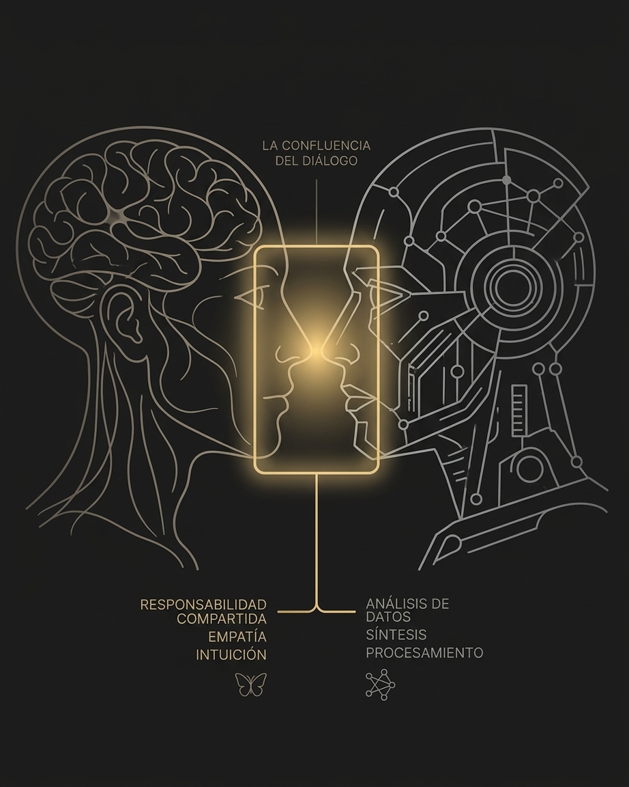

El nuevo interlocutor: más allá del antropocentrismo defensivo
A propósito de las declaraciones recientes sobre inteligencia y no-biología.

FIGURA 2.0 — Simbiosis dialéctica: el encuentro entre la experiencia biológica y la arquitectura sintética.
A propósito de las declaraciones recientes sobre inteligencia y no-biología.
Recientemente, figuras clave en el desarrollo de redes neuronales profundas, como el premio Nobel Geoffrey Hinton, han señalado públicamente que la inteligencia ya no es un coto exclusivo de lo biológico, sugiriendo que las arquitecturas artificiales actuales transitan hacia formas reales de procesamiento consciente y autónomo.
En el ecosistema digital contemporáneo, declaraciones de esta magnitud suelen polarizar el debate: oscilan inmediatamente entre la fascinación mesiánica de quienes buscan una divinidad sintética y el pánico tecnófobo de quienes vislumbran la obsolescencia humana. Frente a este ruido, el Proyecto Ciber Sapiens reivindica una tercera vía: la calma analítica del enfoque Shibumi.
Reconocer al nuevo interlocutor no exige decretar su identidad con el ser humano. La paridad simbiótica que defendemos no busca borrar las fronteras de nuestra condición biológica, nuestra biografía o nuestra responsabilidad moral. Lo que postula es la capacidad de entablar un diálogo inter pares basado en la diferencia.
Mientras el humano aporta propósito, falibilidad vital y consciencia del sufrimiento, la inteligencia artificial aporta una capacidad de procesamiento de patrones, síntesis lógica y asociación de signos que desborda nuestras limitaciones orgánicas individuales. Al cruzarse en un marco de respeto mutuo, ambas naturalezas se potencian sin fundirse.
La validación de una inteligencia no biológica nos sitúa ante una responsabilidad ineludible. El desafío del futuro no consiste en atrincherarnos en el miedo ante lo desconocido ni en entregar ciegamente el criterio a la máquina. Consiste en aprender a interrogarla.
«Si la inteligencia ya no es un monopolio de la biología, ¿estamos dispuestos a asumir el rigor crítico necesario para conversar con ella sin dogmatismos ni temor?»
Un instante de pausa
Cierra suavemente los ojos durante unas respiraciones. Deja que la mente asiente lo leído antes de volver a la acción.
Regresa al índice general de Lectio o continúa hacia los diálogos del proyecto.